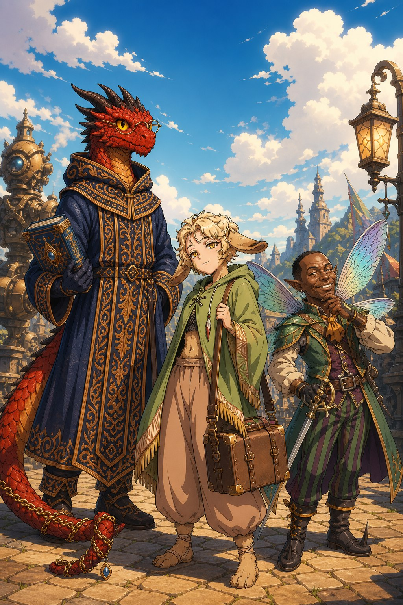
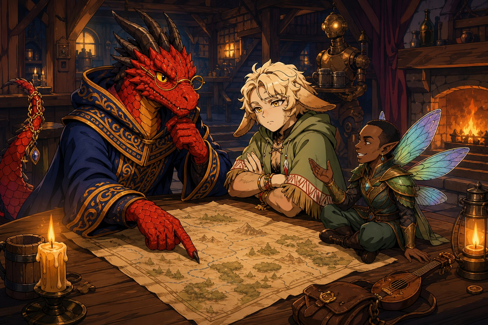

어둠칼의 다섯 시즌이 끝나고, 한동안은 다시 모일 일이 없을 거라 생각했다. 그런데 잊을 만하면 울리는 새 캠페인의 알림이 다시 한 번 도착했다. 이번에는 어둠칼도, 잿불도 아니었다. 표지만 보아도 포근한 색감의 판타지 동화책 같은, 대거하트라는 낯선 룰이었다. 정발도 되지 않았고 국내 자료도 거의 없는 데이터룰이라, 죄다 영어 원문을 번역기로 더듬어가며 읽어야 했다. 그럼에도 익숙한 팀원들과 함께라면 어떻게든 되리라는 믿음이 걱정보다 컸다. 위대한 마법과 경이로운 풍경, 신화적 괴수와 강력한 적들로 가득 찬 세계를, 이번에는 플레이어들이 직접 묘사하며 채워나가기로 했다.
네 시간에 걸친 캐릭터 메이킹 끝에, 세 사람이 빚어졌다.
세 사람
콰에리온 녹티스는 로어번 출신의 드라코나였다. 나이는 이백여섯. 붉은 비늘에 금속 테 안경을 쓴, 이백 년 넘게 쌓은 지식과 호기심으로 뭉친 학자형 마법사다. 친한 이들은 그를 녹트, 또는 리온이라 불렀다. 처음엔 지식에 능통한 조용한 학자 마법사를 구상했으나, 팀의 전력이 약해 보인다는 걱정에 공격적인 위저드로 갈까 고민하다, 결국 다시 지식형으로 돌아왔다. 그의 과거에는 지울 수 없는 과오가 하나 있었다. 자신의 오만과 욕심 때문에 마을 하나가 통째로 지상에서 사라졌고, 그는 그 실수를 저지르기 전으로 돌아가 모든 걸 되돌려 놓기 위해 타임리프 마법을 찾아 여행길에 올랐다. 고지식하지만 남에게 참견하는 걸 참지 못하는 성격이었다.
판델라는 열아홉의 드루이드였다. 퍼볼그인 아빠와 인간인 엄마 사이에서 태어난 혼혈로, 145센티미터의 작은 체구에 양볼부터 발끝까지 연갈색 털이 보송하게 나 있었다. 축 처진 눈매와 사람 좋은 웃음은 온순해 보였지만, 노랗게 빛나며 상대를 뚫어져라 바라보는 눈은 어딘가 섬뜩했고, 입을 열면 배려라고는 눈곱만큼도 없는 베베 꼬인 말투가 첫인상을 완전히 배반했다. 퍼볼그도 인간도 아닌, 그 어느 쪽에도 속하지 못한 채 자란 아이였다. 열다섯 살 생일날 사냥꾼이던 엄마의 화살에 친구 토끼를 잃고 홀로 도망친 뒤, 숲에 은둔하던 이름 없는 드루이드 ‘할멈’에게 거두어졌다. 할멈은 그를 부드럽게 매만져주지도, 트라우마를 건드리지도 않고 그저 묵묵히 지켜보다가, 열아홉이 되자 짐을 문밖에 내놓고는 다시 문을 열어주지 않았다. 그렇게 판델라는 또 한 번 혼자가 되어 여행 가방을 들었다. 옆에 누가 있든 상관없다고, 오직 이 힘만은 끝없이 키우겠다고 결심하면서. 실은 좋아하던 직업이 드루이드였을 뿐 아니라, 동물 동료를 대신 다치게 할 수 있다는 레인저의 스킬이 견딜 수 없이 싫어서 내린 선택이기도 했다.
자글롬은 슬라이본 출신의 페어리 바드였다. 페어리치고도 유난히 작은 몸에, 거친 뒷골목에서 땀 냄새 나는 아저씨들 틈에 부대끼며 익힌 ‘깔깔유머집’을 성서처럼 품고 다녔다. 한때 운명의 짝이라 여겼던 자이언트 캄버리와의 이루지 못한 사랑을 가슴에 묻고 있었다. 종족의 장벽 앞에서, 캄버리의 커다란 몸짓은 언젠가 자신을 해칠 수 있는 위협으로 느껴졌고, 결국 자글롬은 그를 떠났다. 이후 길거리 광대의 기억을 쫓아 무대에 섰지만 관객의 반응은 기대와 달랐고, 공연으로는 먹고살 수 없었던 그는 세상의 규칙을 비틀어 빠져나가는 뒷골목의 기술로 살아남았다. 웃기는 것을 제외한 모든 방법으로 상대를 움직일 수 있는 사내. 그러면서도 언젠가는 사람들을 웃게 하리라는 기대만은 버리지 않은, 존재 자체가 이미 아재개그에 가까운 캐릭터였다.

아저씨 바드 페어리와, 싸가지 없는 사춘기 드루이드 퍼볼그와, 꽉 막힌 듯하면서도 어딘가 다정한 용 학자. 사람도, 엘프도, 드워프도 하나 없는 기묘한 조합의 파티가 그렇게 완성되었다. 아직 아무 일도 시작되지 않았고 세계의 이름조차 알지 못했지만, 마스터는 실험적인 캠페인이 될 거라는 말과 함께 늘 하던 인사를 남겼다. 함께 해주어서 고맙다고. 장기 캠페인의 엔딩은 한 사람 평생에 그리 많이 일어나는 사건이 아니라고. 그러니 한 번 더 할 수 있다면 좋겠다고. 그렇게 ‘에러하트’의 첫 세션이 다음 주로 미뤄졌다.